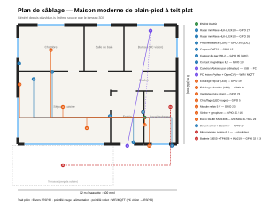

Une maison qui gère seule son confort, sa sécurité et son énergie, et que l'on pilote depuis un téléphone.
Présenté par : [Elnovic NTEDIKA] et [Nasim MOHCIN]
Confort
Sécurité
Économie
Vision par ordinateur
Pilotage à distance
Le point de départ
Trois problèmes de la maison d'aujourd'hui
Confort
On oublie d'éteindre la lumière, on chauffe ou on refroidit des pièces vides, on règle tout à la main.
Sécurité
Une intrusion ou une fuite de gaz peut passer inaperçue si personne n'est là pour la voir.
Gaspillage
Des équipements fonctionnent pour rien, alimentés par le réseau électrique.
Notre question : peut-on résoudre ces trois problèmes avec des composants simples, peu chers et programmables ?
Notre réponse
Une seule chaîne : capter, décider, agir, prévenir
Méthode
D'abord en virtuel, ensuite au FabLab, avec le même code
Étape 1
Jumeau numérique 3D
La maison, ses pièces et ses 19 composants, construits à partir d'un plan unique.
Étape 2
Simulation Wokwi
Le vrai programme de l'ESP32 tourne dans un simulateur et reçoit les capteurs de la 3D.
Étape 3
Maquette FabLab
Le même programme est copié sur la vraie carte. Le même plan sert à découper le carton.
Pourquoi ? On teste et on corrige tout avant d'acheter et de souder. Ce que vous voyez fonctionner aujourd'hui est exactement ce qui sera construit.
Le cerveau
ESP32 DevKit
Son rôle
Lire tous les capteurs, appliquer les règles (allumer, ventiler, déclencher l'alarme) et communiquer avec le téléphone.
Comment il fonctionne
Un microcontrôleur avec WiFi intégré. Il exécute en boucle notre programme écrit en C++ (Arduino), plusieurs centaines de fois par seconde.
2 cœurs, 240 MHzWiFi + Bluetooth≈ 34 broches3,3 V
Choix technique
Pourquoi pas un Arduino Uno ?
Arduino Uno
ESP32
WiFi
Non (module en plus)
Intégré
Vitesse
16 MHz
240 MHz
Mémoire vive
2 Ko
520 Ko
Programmation
IDE Arduino
IDE Arduino
L'Arduino reste parfait pour apprendre, mais notre maison doit parler au téléphone : l'ESP32 le fait sans carte supplémentaire.
Confort
La lumière et la température s'adaptent seules à la présence humaine et à l'environnement.
Capteur de présence
Illustration du module HLK-LD2410 (22 × 16 mm)
Radar mmWave HLK-LD2410
Son rôle
Savoir si quelqu'un est dans la pièce pour allumer la lumière et la climatisation.
Comment il fonctionne
Il émet des ondes radio à 24 GHz et analyse leur écho. Il perçoit des mouvements de quelques millimètres, comme la respiration : il détecte une personne même immobile, contrairement à un détecteur infrarouge classique.
24 GHzjusqu'à ≈ 6 msortie OUT → GPIO 27
Éclairage intelligent
Photorésistance (LDR) et LED
Rôle de la LDR
Mesurer la lumière du jour : on n'allume jamais une lampe en plein jour.
Comment elle fonctionne
Sa résistance diminue quand la lumière augmente. L'ESP32 mesure une tension entre 0 et 3,3 V (convertisseur analogique, 4 096 niveaux).
La règle de l'éclairage
Lumière allumée si présence ET il fait sombre (moins de 40 %). Extinction 10 s après le départ.
Température
Capteur DHT22
Son rôle
Mesurer la température et l'humidité du séjour.
Comment il fonctionne
Une thermistance mesure la température et un condensateur dont la capacité varie avec l'humidité mesure l'humidité. Une petite puce envoie les deux valeurs sur un seul fil, en numérique.
−40 à 80 °Cprécision ±0,5 °C1 mesure / 2 sGPIO 15
Climatisation
Relais et ventilateur 5 V
Rôle du relais
Un interrupteur commandé : l'ESP32 (3,3 V, très peu de courant) allume le ventilateur, qui consomme davantage.
Comment il fonctionne
Une bobine devient un aimant et attire un contact métallique, ce qui ferme le circuit du ventilateur.
La règle
Si quelqu'un est présent : ventilateur au-dessus de consigne + 1 °C, arrêt à la consigne. Chauffage (LED rouge) en dessous de consigne − 1 °C.
Sécurité
Détection d'intrusion par vision par ordinateur, capteurs d'ouverture et de gaz, alerte immédiate sur le téléphone.
Les yeux de la maison
ESP32-CAM ou webcam
Son rôle
Filmer l'entrée et envoyer l'image en continu au PC qui l'analyse.
Comment elle fonctionne
L'ESP32-CAM contient un capteur d'image OV2640 et du WiFi : elle diffuse sa vidéo comme une page web. Pendant la présentation, une webcam USB fait le même travail.
640 × 480flux WiFi MJPEG≈ 10 €
Vision par ordinateur
Comment la maison reconnaît un visage
Protection des données (RGPD) : aucune photo des résidents n'est conservée, seulement leur empreinte numérique, sur le PC. Aucun nom ne circule sur Internet.
Capteurs de sécurité
Contact de porte et capteur de gaz
Contact magnétique (ILS)
Deux lames métalliques dans une ampoule de verre se touchent quand l'aimant de la porte est proche. Porte ouverte : le circuit s'ouvre et l'ESP32 le voit immédiatement.
Capteur de gaz MQ-2
Un élément chauffé en oxyde d'étain change de résistance en présence de gaz ou de fumée. Au-dessus de 60 %, l'alarme se déclenche, même désarmée.
Alerter
Telegram
Notification + photo sur le téléphone
Sirène, écran, bouton, notification
Buzzer piézoélectrique
Un disque de cristal vibre quand on lui applique une tension : sirène à deux tons.
Écran OLED
Affiche l'état de la maison dans l'entrée (photo : écran OLED sur plaque d'essai).
Bouton
Appui court : armer ou désarmer. Appui de 3 s : alarme SOS.
Logique de l'alarme
Quatre états, des règles simples
Délai de sortie
15 s après l'armement pour quitter la maison sans déclencher l'alarme.
Délai d'entrée
15 s pour que la caméra reconnaisse un résident qui rentre.
Toujours actif
Le gaz et le bouton SOS déclenchent l'alarme même si elle est désarmée.
Économie
Une énergie solaire indépendante du réseau, et des équipements qui ne fonctionnent que lorsqu'ils servent.
Chaîne d'énergie
Panneau solaire, batterie, mesure
Panneau solaire 6 V
Des cellules en silicium transforment la lumière en courant électrique.
Batterie 18650 + module TP4056
La batterie lithium-ion stocke l'énergie ; le TP4056 la charge sans danger et coupe à 4,2 V.
Capteur INA219
Mesure le courant et la tension : on connaît la production et la consommation réelles.
Mesurer l'économie
Une économie mesurée, pas seulement annoncée
Notre maison
Lumière seulement si présence ET obscurité ; climatisation seulement si quelqu'un est là.
Maison « sans IA » (référence)
Lumières allumées dès qu'il fait sombre, climatisation selon la seule température.
Mode éco
Batterie sous 20 % : la climatisation est coupée, la sécurité et l'éclairage restent actifs.
L'ESP32 calcule en continu
économie = 1 − conso / conso sans IA
Le résultat s'affiche en direct sur le site de contrôle.
Pilotage à distance
Le site de contrôle et le protocole MQTT
Site de contrôle
Fonctionne sur ordinateur et téléphone : alarme avec code, bouton SOS, lumières, consigne, énergie, caméra en direct, graphiques.
MQTT
Un « bureau de poste » (broker) : chaque appareil publie des messages sur des sujets et s'abonne à ceux qui l'intéressent. Messages de quelques centaines d'octets, en temps réel.
maison-ia/<id>/etat → l'ESP32 publie
maison-ia/<id>/cmd/alarme ← « armer »
maison-ia/<id>/cmd/lumiere/salon ← « on »
maison-ia/<id>/vision ← « connu »
maison-ia/<id>/capteurs/virtuels ← jumeau 3D
Démonstration en direct
Jumeau 3D + site de contrôle
Réalisation au FabLab

Plan de câblage généré automatiquement depuis le plan de la 3D (fichiers de découpe laser dans plan/fabrication)
Maquette en carton au 1/20
Structure
Murs en carton découpés au laser (60 × 45 cm), fenêtres en plexiglas, toit amovible pour voir l'intérieur.
Électronique
ESP32 sur plaque d'essai, fils Dupont qui passent dans le couloir, composants collés au pistolet à colle.
Même code, même plan
On téléverse le firmware testé dans Wokwi ; la 3D passe en mode « miroir » et reproduit la maquette.
Fait : plan, jumeau 3D, firmware, simulation Wokwi, vision, site
Prochain : commande des composants et tests sur plaque d'essai
FabLab : découpe laser, montage, câblage
Final : tests en mode miroir, réglages, démonstration
Recul critique
Limites et améliorations
Limites actuelles
Broker MQTT public : identifiant difficile à deviner, mais pas de mot de passe
Code de désarmement vérifié par le site, pas par l'ESP32
Radar LD2410 absent de Wokwi : remplacé par un capteur PIR en simulation
Reconnaissance sensible à l'éclairage et à l'angle du visage
Améliorations prévues
Broker privé (Mosquitto) avec mot de passe et chiffrement TLS
Code vérifié par l'ESP32
Détection de « faux visage » (photo tenue devant la caméra)
Prévision météo pour anticiper la recharge solaire
Merci !
Confort automatique, sécurité par vision par ordinateur, énergie solaire mesurée, pilotage depuis un téléphone. Le tout testé en virtuel avant d'être construit.